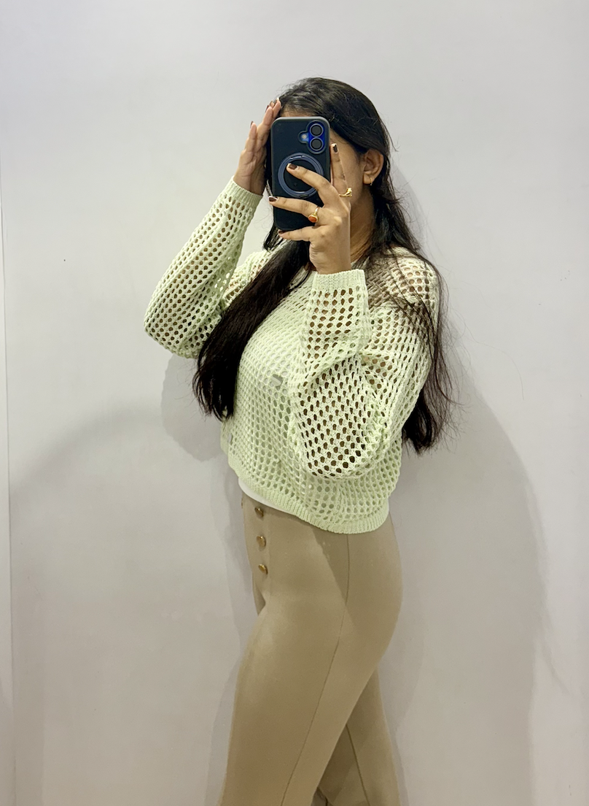

hi folks 👀
I'm Puja — I'm a builder, learner, and creative tinkerer.
I code in C++, Python, and JavaScript, solve DSA problems for fun (and pain), and I'm exploring Generative AI to see what machines can dream up. I love making things that work — whether it's a clean website, a clever algorithm, or a chapter in a book.
I'm a trained Bharatnatyam dancer, published author, and passionate about painting. Art teaches patience; code teaches precision. I like living at the intersection.
Currently studying CSE at IGDTUW, writing on Medium, and always up for conversations about tech, creativity, or what's next.
🌱 Growing Up
I'm the eldest daughter who pretty much ran the household while figuring out who I wanted to be. I've lived in three different cities, which taught me adaptability and that home is less about a place and more about what you carry with you.
I've always been a top performer academically — the kind of student who thrives on challenges. I qualified for IIT-JEE on my first attempt, one of the toughest exams in the world, which felt less like proving something to others and more like proving it to myself.
Beyond the classroom, I've won prizes in multiple art competitions because creating has always been my way of processing the world. I spent my secondary and high school years learning French and graduated with a perfect 100. I speak English, Hindi, Bengali, and French — oui, je parle quatre langues.
In 9th grade, I published my first book, "Delicacies" (available on Amazon and Flipkart), because I had stories that needed to exist outside my head. Writing it taught me that finishing something matters more than it being perfect.
I've learned Bharatnatyam for six years, coded in multiple languages, painted canvases, and written poetry that makes people uncomfortable. I don't fit neatly into one box, and I'm fine with that.
✍🏼Medium...
📚Latest Reads
We Were Liars- E. Lockhart
The Color Purple- Alice Walker
The Hate U Give- Angie Thomas
And Then There Were None- Agatha Christie
Turtles All The Way Down- John Green
Quotes I resonate with...
"What's the point of having a voice if you're gonna be silent in those moments you shouldn't be?" — The Hate U Give
"Anyone can look at you. It's quite rare to find someone who sees the same world you see."— Turtles All The Way Down
"The more I wonder, the more I love." — The Color Purple
"Be a little kinder than you have to." — We Were Liars
💫 Ideas & Contradictions
Ideas that haunt me:
- The duality of existence 🌗
- Authenticity in a world of masks
- Mortality & impermanence ⏳
- The gap between who we are & who we pretend to be
- Words that cut deeper than silence ✍️
- Questioning societal scripts 📜
- Finding yourself when no one's looking
- Cosmic insignificance (in a comforting way) ✨
What moves me:
- Poetry that tells uncomfortable truths 📝
- Bharatnatyam's storytelling precision 💃
- Code that actually works 💻
- Brushstrokes that speak louder than words 🖌️
- Music that feels like a conversation 🎵
- Books that change how you see the world 📚
- Finding yourself when no one's looking
- Honest conversations at 2 AM ☕
Currently exploring:
- The intersection of art & algorithm
- AI ethics & creative authenticity
- Writing without fear of judgment
- Building things that matter
- Slowing down intentionally
- Finding beauty in contradictions
☀️ Career Approach
Academics came naturally to me since childhood. I was the kind of student who doesn't just meet expectations but quietly exceeds them. But I've never been just about grades. I've always believed that extracurriculars shape you as much as textbooks do, so I danced, painted, competed, published, and learned languages while acing exams.
I chose Science (PCM) because I loved the logic, the puzzles, the way math and physics made the world make sense. Engineering felt like the natural next step — a degree that would let me build things that matter. B.Tech in Computer Science wasn't just a career choice; it was a commitment to learning how systems think, how code creates, how problems get solved.
Right now, I'm deep in coding — C++, Python, JavaScript, DSA — sharpening my skills, building projects, and exploring Generative AI because I'm fascinated by machines that can create. I'm the type to work my ass off when something grabs me, and right now, that's Computer Science.
But here's the thing: I don't see myself doing this forever. My long-term vision? Build a career in tech, then peacefully retreat into my writing business. I want to code solutions by day and craft stories by night, then eventually flip that ratio. Tech gives me structure and problem-solving; writing gives me freedom and self-expression. I don't want to choose between them — I want both, just at different intensities over time.
I'm not chasing titles or climbing ladders. I'm building skills, creating value, and designing a life where I can think deeply, build meaningfully, and write honestly.